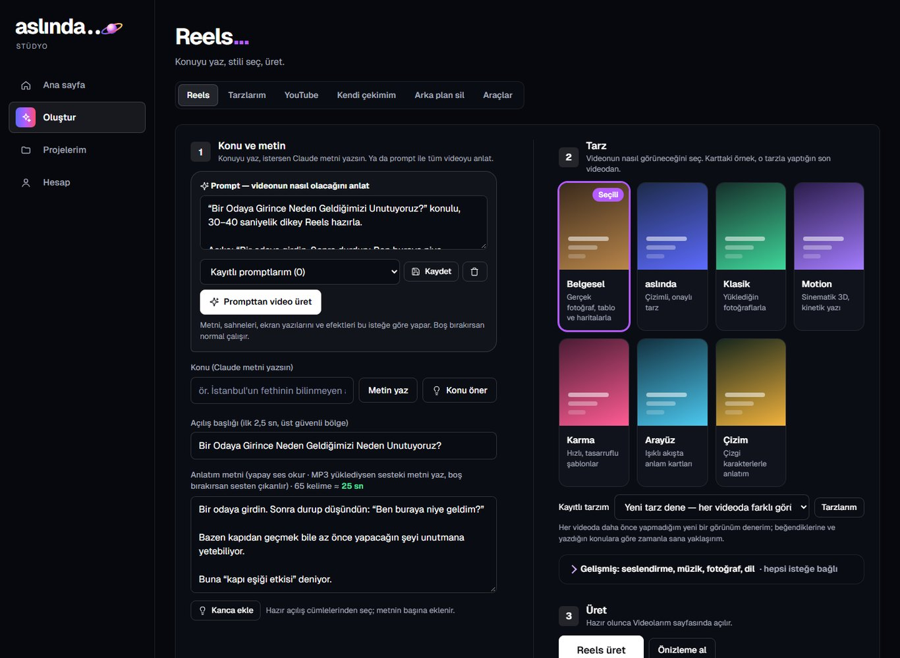
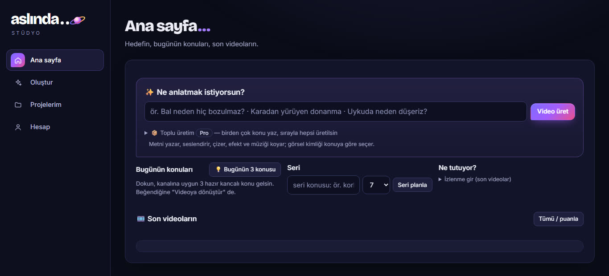

Konudan videoya
Konuyu ya da hazır metnini yaz. Program metni yazar, seslendirir, sahnelere böler, görselleri bulur ve videoyu çıkarır. Önizlemede bir sahneyi beğenmezsen o sahneyi düzeltirsin.
Türkçe seslendirme, altyazı ve gerçek görsellerle Reels videosunu bilgisayarında dakikalar içinde üret.
Bunlar programın gerçek ekranları. Konuyu yazarsın, tarzı seçersin; geri kalanını program yapar.


Reels sayfasında konuyu, açılış başlığını ve anlatım metnini yazarsın. İstersen prompt ile videonun nasıl olacağını anlatırsın.
Ana sayfa kanalına uygun üç konu önerir; beğendiğini tek tıkla videoya çevirirsin.
Video bitince önizlemede izler, puanlar, beğenmediğin sahneyi düzeltirsin.
Bir tarz seç, videoyu o dille kur. Yandaki kareler programın gerçek çıktılarından alındı.
Hepsini program yapar; sen önizlemede bakar, beğenmediğin sahneyi düzeltirsin.
Konuyu ya da hazır metnini yazarsın.
Program metni yazar ve seslendirir. Ücretsiz yerel ses de olur.
Sahnelere böler; altyazı sesten otomatik zamanlanır.
Görselleri bulur. Belgeselde Wikimedia Commons'tan gelir, atıfı hazır yazılır.
Videoyu çıkarır. Önizlemede bir sahneyi beğenmezsen o sahneyi düzeltirsin.
Metin, ses, görsel, altyazı ve kapak aynı programda. Başka uygulamaya geçip dosya taşımazsın.
Konuyu ya da hazır metnini yaz. Program metni yazar, seslendirir, sahnelere böler, görselleri bulur ve videoyu çıkarır. Önizlemede bir sahneyi beğenmezsen o sahneyi düzeltirsin.
Altyazı sesten otomatik zamanlanır, kelime kelime vurgulanır. Telefonda okunur boyuttadır.
Seslendirme bilgisayarında çalışan ücretsiz Türkçe sesle yapılabilir; anahtar da internet de gerekmez. İstersen ElevenLabs sesini ya da kendi MP3'ünü kullanırsın.
Aynı videodan 16:9 ve 1:1 kopyalar ve 15 ya da 30 saniyelik kısa sürümler çıkar.
Beğendiğin videonun görünümünü kaydet, sonraki videolarını hep o renk ve tempoyla yap. Referans görsellerden de kendi tarzını çıkarabilirsin.
Kendi çektiğin videoyu yükle. Duraklamaları, "eee"leri ve tekrar alınan çekimleri keser; kesilmiş MP4, altyazı dosyası, başlık, açıklama ve en iyi anlardan Shorts çıkarır. Adobe Premiere kullanıyorsan oraya da kurar.
Fotoğraftaki kişiyi ya da ürünü temiz keser. Bir kez kurulur, sonra ücretsiz ve internetsiz çalışır; resimlerin bilgisayarından çıkmaz.
Videodan seçilen karelerle Reels ve YouTube kapağı üretir; konuyu büyütür, başlığı yerleştirir.
YouTube videosu için başlık, açıklama, bölümler ve etiketler hazırlar. Pro'da beş konuyu sıraya koyup hepsini üretir, YouTube'a otomatik yükler.
"Telefona kur" ile programı telefonuna uygulama gibi ekler; QR kodu okutman yeter.
Haklar her hafta yenilenir. Ücretsiz plan süresizdir.
Denemek için
Düzenli üretenlere
Her şey açık
%33 indirim. Ayda 999 'ye gelir
7 gün Pro deneme. Ücretsiz planla başlayınca ilk 7 gün Pro'nun tüm özellikleri açıktır; deneme 5 Reels ile sınırlıdır.
| Hak (haftada) | Ücretsiz | Başlangıç | Pro |
|---|---|---|---|
| Reels | 1 | 3 | 8 + 2 bonus |
| YouTube paketi | – | 1 | 2 + 1 bonus |
| Sahne düzeltme | – | 3 | 15 |
Bonus haklar normal hak bitince açılır. Haklar pazartesi yenilenir.
Hakkın biterse ek paket alabilir ya da kendi API anahtarınla devam edebilirsin. Ödeme havale/IBAN iledir.
Kurulum dosyasını indir ve çalıştır; gerisini kurulum halleder. Ücretsiz plan süresizdir.
Program bir kez kurulur ve bilgisayarında çalışır. Planlar süreli lisanstır: Başlangıç ve Pro 31 gün, Pro Yıllık 366 gün. Ücretsiz plan süresizdir.
Bazı yapay zekâ özellikleri (örneğin Claude ile planlama ya da ElevenLabs sesi) kendi anahtarını girmeni ister. Anahtarlar bilgisayarında şifreli saklanır. Ücretsiz yerel ses anahtar istemez.
Görseller yalnız kamu malı, CC0, CC BY ya da CC BY-SA lisanslı olur. Atıf isteyenlerin kaynağı videoyla birlikte bir dosyaya yazılır; paylaşırken açıklamaya eklemelisin. Müzik hazır ve lisansı uygun parçalardan seçilir, yapay zekâyla müzik üretilmez.
Ücretsiz planda küçük bir "aslında stüdyo" filigranı bulunur. Ücretli planlarda filigran yoktur; Pro'da kendi logo animasyonunu ekleyebilirsin.
Hayır. Kendi çekimini kurgularken sonuç doğrudan MP4 ve altyazı dosyası olarak çıkar. Premiere bağlantısı isteğe bağlıdır.
Program şimdilik yalnız Windows'ta kurulur. Telefondan, "Telefona kur" ile bilgisayarındaki programa erişirsin.
Programdaki "Sorun bildir" düğmesi ekran görüntülü bir rapor hazırlar; API anahtarların maskelenir. Raporu aşağıdaki iletişim adresine gönderebilirsin.
Satın alma, lisans kodu ve destek için yaz.